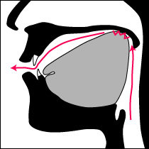
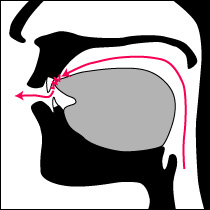
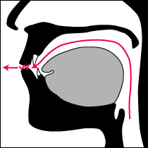

大歓喜トップ >> サンスクリット｜トップ >> 音読のための基礎文法 >> 発音の最重要ポイント
発音の最重要ポイント
サンスクリットには、日本語母語話者が必ず学んで気をつけるべき、発音上の大きな注意点が2つある。日本語にも英語にもない特徴で、注意して聴いて真似ようにも何に注意すればいいのか知らなければ聴かないも同じなので、まずそれらを概説する。
(1).口内の構え〔調音点〕｜(2).帯気音(有気音)と無気音の区別
(1).口内の構え〔調音点〕
サンスクリットの発音の多くは、口の中で音を作る位置（調音点・調音域）によって、5種類に分類配列される。口の奥から手前に向かう順に、下の模式図のようになる。なお、「〔該当する音素〕」としてその下に該当する幾つかのアルファベットを並べているが、その具体的発音の分からない方も、後で整理するので、ここではあまり気になさらないでほしい。
(1)-1.喉音（後舌面軟口蓋音）
日本語のカ行の構えとほぼ同じ。舌の根元に近い方を、口の奥の方の柔らかい天井に接触・接近させる。但し、日本語のカ行の平均よりは、さらに奥寄りに構えた方が発音しやすい。
〔該当する音素〕
k, kh, g, gh, ṅ,
(1)-2.口蓋音（前舌面硬口蓋音）
 日本語のチャ行・シャ行に聞こえる構えだが、かなり異なる。舌の中央部分の面を、口の前後中央付近の硬い天井に接触・接近させる。
日本語のチャ行・シャ行に聞こえる構えだが、かなり異なる。舌の中央部分の面を、口の前後中央付近の硬い天井に接触・接近させる。
日本語では、舌の先に近い面と、上の歯茎の内側の間で作られることが多いが、それよりはかなり奥寄りの構え。日本語では、舌先と歯茎の裏の構え(タ行・サ行)から変化した構えなのに対し、サンスクリットでは、上記の喉音と関係が深い構えなので、この差がある。
〔該当する音素〕
c, ch, j, jh, ñ,
ś, y,
(1)-3.反舌(そりじた)音（裏面舌尖硬口蓋音）
 日本語には殆ど存在せず、最も近いラ行ですら日本語では必ずしもこの構えをする必要がない。日本人の耳には、タ行・ダ行・ナ行・シャ行・ラ行の音として聞こえるが、下で述べる歯音もほぼ同様に聞こえるので、対比して覚えること。
日本語には殆ど存在せず、最も近いラ行ですら日本語では必ずしもこの構えをする必要がない。日本人の耳には、タ行・ダ行・ナ行・シャ行・ラ行の音として聞こえるが、下で述べる歯音もほぼ同様に聞こえるので、対比して覚えること。
舌の先を大きく反(そ)り返し、口の中央部付近の硬い天井から歯茎の付け根の裏側に、舌先の裏側を接触・接近させる構え。舌先が頭頂に向くイメージ。舌の中央部には深いくぼみができる。
〔該当する音素〕
ṭ, ṭh, ḍ, ḍh, ṇ,
ṣ, r,
(1)-4.歯音（舌尖歯音）
日本語のタ行・サ行の構えに近い。舌の先方を、上の前歯の裏に接触・接近させる。日本語のタ行・サ行よりは、舌先の向かう位置がより前(下)の方であるが、但し、英語の"th"と違って、上の前歯の先より向こうにまで出すことはしない。
上記の反舌音との区別をつけることが重要で、綴りを確認しながら明瞭に発音し分けること。
〔該当する音素〕
t, th, d, dh, n,
s, l,
(1)-5.唇音（両唇音）
日本語のマ行・パ行・バ行と同じ構え。上下の唇同士を接触・接近させる。但し、/v/の音は、英語などと同じく、上の前歯の先と下唇の間で音を作る(＝唇歯音)ことが多い。
〔該当する音素〕
p, ph, b, bh, m,
(v),
未経験の方は、少なくとも反舌音に関しては、一定の練習・訓練が必須である。できれば、聞き分けの得意な、インド＝アーリア系またはドラヴィダ系言語の話し手に聞いてもらいながら、練習できることが最も望ましい。全体としては、日本語に比べて、口の中を前後に広く使うことがポイントで、一方では口の中央部や奥の方、対しては/u/のときの唇の突き出しを意識するといいと思う。
顎の開きは、大きく開く音が少ないので、普段は半分閉じたくらいの構えでいると楽であろう。
(2).帯気音(有気音)と無気音の区別
各構えの位置で閉鎖を作って息の流れをせき止め、素早く開放して出される音のことを、破裂音(閉鎖音)という。アルファベットで言えば、b,d,k,p,t,といった音のことである。サンスクリットでは上記5種類の構えに破裂音がある。
日本語では、破裂音は、各構えの位置につき、2種類ずつ区別される。いわゆる清音と濁音である。清音のときは、閉鎖ができている間、喉の声帯が開いて息が素通りしている。濁音のときは、閉鎖ができている間に声帯が合わさり、そこで息が振動して声が出ている。そこで、清音の子音を無声音、濁音の子音を有声音と呼んでいる。ハ行についてだけは、もとの清音のハ行が変化して破裂音ではなくなってしまったために、半濁音という名前とパ行の表記を作って、それを無声音に宛てている。
英語も日本語と同様に、この2種類ずつを区別する。
北京語もまた、2種類ずつを区別するが、区別する基準が異なる。閉鎖を開放した直後に、大きく息が漏れてきちんと声にならないわずかな時間があるかどうかで、2種類を区別している。大きな息漏れを伴う方が帯気音(有気音)で、息漏れがなくすぐに次の音が始まるのを無気音という。
日本語では無意識のうちに帯気音(有気音)と無気音が現れ、言葉の意味の区別には結びついていないのだが、このような区別をする言語も、世界にはたくさんある。
ところがサンスクリットは、その両方を区別して、合計4種類ずつを区別する。ローマ字で書く場合は、無声音・有声音の違いについては、英語と同様にそれぞれ異なるアルファベットを充て、帯気音を表すには、その後ろに"h"を添えて書き分ける。
下はそのイメージ図で、黒は調音点の閉鎖の有無、赤は声帯の振動による声の有無、緑はそれに伴って出る息の流れを意味している。時間が左から右に流れており、唇音で"pa","pha","ba","bha"をそれぞれ発音した場合のイメージである。

後続の"h"を言う時間は、子音本体や続く母音を言う時間に比べて十分短いため、"h"を含めて一つの子音とみなされる。日本語の拗音で、小さい「ゃ、ゅ、ょ」が付いていてもやはり一拍とみなされるのと、同じようなものである。
帯気音(有気音)と無気音の区別を練習するには、それらを区別する言語の話し手に聞いていてもらえれば最高であるが、口の前に柔らかい紙を置きながらその揺れ方を鏡で見て息の大小を確認する方法もある。日本人は無意識のうちに帯気音を使っているため、無気音のはずの音を帯気音で発音してしまう間違いにも注意を払わなくてはならない。
（最終更新2013.7.7）
大歓喜トップ >> サンスクリット｜トップ >> 音読のための基礎文法 >> 発音の最重要ポイント